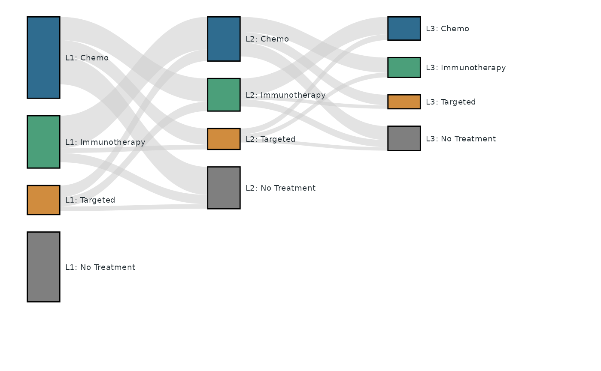
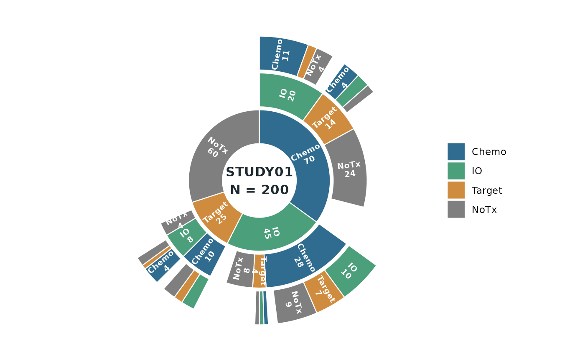

Draw a treatment-pattern sunburst (ring chart) using ggplot2 primitives
only (geom_rect + coord_polar + geom_text) – the output is a fully
static ggplot object suitable for publications and regulatory documents.
Usage
tfl_plot_sunburst(
paths,
path_cols = NULL,
path_value = "n",
levels = NULL,
segment_labels = NULL,
palette = NULL,
segment_color = "white",
ring_height = 0.92,
inner_radius = 1,
show_labels = TRUE,
label_size = 2.6,
label_color = "white",
label_min_frac = 0.02,
center_label = NULL,
center_size = 4.2,
center_color = "#1F2A30"
)Arguments
- paths
A data frame of treatment sequences (one row per path).
- path_cols
Character vector naming the ring columns of
paths, in ring order (inner first). Default: every column exceptpath_value, in the order they appear.- path_value
Column name in
pathsholding the patient count of each path.- levels
Optional character vector fixing the order of the segment categories within every ring. Default: order of first appearance across the ring columns.
- segment_labels
Optional named character vector mapping a category to the display text used on the arcs and in the legend (e.g.
c(IO = "Immunotherapy")). Unmapped categories show verbatim.- palette
Optional colour palette for the categories. A named vector is matched by category name; an unnamed vector is recycled over
levels. Default:grDevices::hcl.colors()"Set 2".- segment_color
Border colour of the arcs.
- ring_height
Radial thickness of each ring, in
(0, 1]ring units.- inner_radius
Radius of the centre hole, in ring units.
- show_labels
Whether to draw the arc labels.
- label_size
Arc label size.
- label_color
Arc label colour.
- label_min_frac
Minimum share of the full circle an arc must span for its label to be drawn (labels on thinner arcs are suppressed).
- center_label
Optional text drawn in the centre hole (e.g.
"STUDY01\nN = 200").- center_size
Centre label size.
- center_color
Centre label colour.
Details
Each ring is one treatment line (the innermost ring is the first line) and
the arc length is the number of patients (one patient = one angular unit,
so no normalisation is applied). The child arcs of a segment start at the
parent's start angle and nest inside the parent's span; whatever remains of
the parent's span stays empty – those are the patients with no further
treatment line (attrition), the same idea as the unlinked part of a
tfl_plot_sankey() node.
The input is a path table: one row per treatment sequence, with one
column per ring (path_cols) and a count column (path_value). NA (or
"") in a ring column means the path stops before that ring; once a path
has stopped it must stay NA in all later columns. Rows describing the
same sequence are summed.
Examples
# One shared dataset, two views. This path table is the first three lines
# of the tfl_plot_sankey() example's 200-patient cohort: one row per treatment
# sequence (C = Chemo, IO = Immunotherapy, T = Targeted, N = No
# Treatment), `n` patients per path (L1 200 -> L2 120 -> L3 70, about 30%
# "No Treatment" per line, no same-treatment transitions). A name like
# "C,IO" is a path that stops after the second line.
seq_n <- c(
"C,IO,C" = 11, "C,IO,T" = 2, "C,IO,N" = 4, "C,IO" = 3,
"C,T,C" = 4, "C,T,IO" = 3, "C,T,N" = 2, "C,T" = 5,
"C,N" = 24, "C" = 12,
"IO,C,IO" = 10, "IO,C,T" = 7, "IO,C,N" = 9, "IO,C" = 2,
"IO,T,C" = 1, "IO,T,IO" = 1, "IO,T,N" = 1, "IO,T" = 1,
"IO,N" = 8, "IO" = 5,
"T,C,IO" = 3, "T,C,T" = 2, "T,C,N" = 3, "T,C" = 2,
"T,IO,C" = 4, "T,IO,T" = 1, "T,IO,N" = 2, "T,IO" = 1,
"T,N" = 4, "T" = 3,
"N" = 60
)
parts <- strsplit(names(seq_n), ",")
paths <- data.frame(
line1 = vapply(parts, `[`, character(1), 1),
line2 = vapply(parts, `[`, character(1), 2),
line3 = vapply(parts, `[`, character(1), 3),
n = unname(seq_n),
stringsAsFactors = FALSE
)
trt <- c(C = "Chemo", IO = "Immunotherapy", T = "Targeted",
N = "No Treatment")
trt_colors <- c(C = "#2F6C8F", IO = "#4B9F7A", T = "#D08C3E",
N = "#7F7F7F")
# The SAME paths feed a sankey: per-line totals give the node sizes
# (including the link-less "L1: No Treatment" node) and consecutive-line
# transitions give the links -- exactly the L1-L3 slice of the
# tfl_plot_sankey() example's node and link tables.
ring <- c("line1", "line2", "line3")
nodes <- do.call(rbind, lapply(1:3, function(k) {
data.frame(
id = paste0("L", k, "_", names(trt)),
stage = paste0("Line", k),
line = paste0("Line", k),
treatment = unname(trt),
label = paste0("L", k, ": ", unname(trt)),
node_n = as.vector(tapply(paths$n, paths[[ring[k]]], sum)[names(trt)]),
stringsAsFactors = FALSE
)
}))
links <- do.call(rbind, lapply(1:2, function(k) {
move <- !is.na(paths[[ring[k + 1]]])
agg <- aggregate(
list(value = paths$n[move]),
list(s = paths[[ring[k]]][move], t = paths[[ring[k + 1]]][move]),
sum
)
data.frame(
source = paste0("L", k, "_", agg$s),
target = paste0("L", k + 1, "_", agg$t),
value = agg$value,
stringsAsFactors = FALSE
)
}))
# Transition view: who moves where between lines.
tfl_plot_sankey(
nodes = nodes,
links = links,
node_id = "id",
node_stage = "stage",
node_label = "label",
node_value = "node_n",
link_source = "source",
link_target = "target",
link_value = "value",
node_treatment = "treatment",
node_line = "line",
treatment_color_mode = "across_lines",
treatment_palette = stats::setNames(trt_colors, trt),
baseline = "top",
link_alpha = 0.55,
label_size = 2.5
)

# Path view of the very same data: each ring is a treatment line, arc
# length is patients, and the empty remainder of a parent arc is the
# attrition (the sunburst counterpart of the sankey's unlinked node span).
tfl_plot_sunburst(
paths,
path_cols = ring,
path_value = "n",
levels = names(trt),
segment_labels = c(C = "Chemo", IO = "IO", T = "Target", N = "NoTx"),
palette = trt_colors,
center_label = "STUDY01\nN = 200"
)
